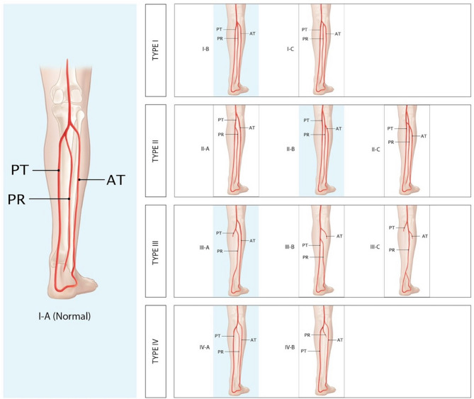

血管の茎（けい＝血液が出入りする動脈と静脈のつながり）をつけたまま骨を切り出し、移植先で顕微鏡下にその血管を縫いつないで「血流の生きた骨」を移す、遊離血管柄付き骨移植（ゆうりけっかんへいつきこついしょく）を報告した論文です。骨の材料には腓骨（ひこつ＝すねの外側にある細い骨）が使われました。血流のない従来の遊離骨移植（骨だけを移す方法）とは異なり、移した骨が生きたまま生着・癒合する点が核心で、のちに下顎（したあご）の再建や長管骨（ちょうかんこつ＝腕や脚の長い骨）の大きな欠損をふさぐ主力の方法へと発展したとされます。
背景 ― 血流のない「移植骨」の限界
骨が事故や腫瘍の切除で大きく失われたとき、その隙間（骨欠損＝こつけっそん）を自分の別の場所の骨で埋める「骨移植」が古くから行われてきました。よく使われるのは腸骨（ちょうこつ＝骨盤の骨）などです。ただし、こうした従来の骨移植は骨だけを取り出して移すため、それ自体には血流がありません。移植された骨は「足場（あしば）」として働き、周りの生きた骨の細胞と血管が少しずつ入り込んで、時間をかけて新しい骨に置き換わっていく（置換＝ちかん、creeping substitution）ことで癒合するとされます。
この「置換」に頼るやり方は、欠損が小さいうちはうまくいきますが、欠損が大きい場合や、移植先の血流が乏しい場所（けがや放射線治療、感染で傷んだ組織など）では、骨がうまくつながらない・吸収されて痩せてしまう・折れてしまう、といった失敗が起こりやすいとされます。血流の届かない大きな骨は、いわば生き残れないためです。
一方で1970年代初頭には、マイクロサージャリー（顕微鏡下で直径1〜2mmほどの細い血管を縫い合わせる技術）が発達し、皮膚などの軟部組織を血管ごと切り離して別の場所へ移す遊離皮弁（ゆうりひべん）が実現し始めていました。だとすれば、「骨も血管をつけたまま運び、移植先で血管を縫いつなげば、血流を保った生きた骨として移せるのではないか」という発想が生まれる素地が整っていた時期にあたります。
この論文がしたこと
著者らは、骨を養う動脈と静脈（血管柄）をつけたまま骨を切り出し、移植先の血管に顕微鏡下で縫いつなぐ遊離血管柄付き骨移植を報告しました。抄録によれば、これは皮膚と骨が大きく失われた下腿（かたい＝ひざから下の脚）の外傷に対する新しい方法で、軟部組織の皮弁による被覆（ひふく＝覆うこと）と組み合わせて行われたと述べられています。そしてこの手術は、「そのままでは切断せざるをえなかった2本の脚を救うために開発された」とされています。
移植する骨の材料には腓骨が用いられました。抄録では、これが「顕微小血管吻合（けんびしょうけっかんふんごう＝顕微鏡下で血管を縫い合わせること）による複合腓骨移植を遠隔部へ移した、人での最初の成功報告である」と位置づけられています。同時代の記録では、片方の脚の腓骨を反対側のすね（脛骨＝けいこつ）の欠損を橋渡しするために移したケースが紹介されているとされます。
抄録に具体的な数値として現れるのは、2例目（Case 2）で「有望（encouraging）な初期の結果」が得られた、という点までです。したがって本ページでも、生着率などの成績を数値で示すことはしません。ここで重要なのは、症例の多さではなく、「血流を保ったまま骨を移植できる」という概念を、臨床で実際に成立させて示した点にあります。
解剖と手技の要点
ここから先は、原著の抄録には具体的な手技の記載がないため、その後に整理されてきた一般的な知見です。腓骨は下腿の外側にある細長い骨で、体重を支える主役は内側の太い脛骨のほうです。そのため腓骨はある程度取り出しても脚への影響が比較的少なく、移植用の骨として使いやすいとされます。
腓骨を養っているのは腓骨動脈（ひこつどうみゃく＝peroneal artery）で、腓骨に沿って走りながら、骨の中心へ入る栄養動脈（えいようどうみゃく）や、骨膜（こつまく＝骨の表面を包む膜）へ向かう枝を出しています。この腓骨動脈と、それに伴う静脈を腓骨と一緒に切り出せば、骨は自分の血流を保ったまま運べます。移植先では、この腓骨動脈・静脈を受け手側の血管に顕微鏡下で縫いつなぎ（血管吻合）、血流を再び通わせることで、移した腓骨が生きた骨として働きます。
膝から下には主要な動脈が3本（前脛骨動脈・後脛骨動脈・腓骨動脈）走っており、腓骨を養うのはそのうちの腓骨動脈です。残る2本が脚を養い続けるため、腓骨とその動脈を取り出しても脚の血流を保ちやすい、という点も腓骨が選ばれる理由とされます。ただし血管の枝分かれには個人差（変異）があるため、実際の手術では採取の前に画像などで血管の走り方を確認する必要があるとされます。

結果
この論文の抄録には、多数例をまとめた成績（症例数や生着率などの数値）の記載はありません。抄録から確認できるのは、そのままでは切断が避けられなかった2本の脚に対してこの方法が用いられたこと、そして2例目で有望な初期結果が得られたこと、までです。したがって本ページでも、成績に関する数値は記載しません。
抄録が主張しているのは、これが顕微小血管吻合による複合腓骨移植を遠隔部へ移した人での最初の成功報告である、という点です。少数例ながら、「血管をつないで血流を保った骨を、離れた場所へ移して生着させる」という概念が臨床で実際に成り立つことを示した報告と位置づけられます。
意義 ― なぜ再建外科を変えたのか
この報告の本質的な貢献は、それまで軟部組織（皮膚など）にとどまっていたマイクロサージャリーによる遊離移植を、骨にまで広げた点にあるとされます。血管柄をつけて血流を保った骨は、周りの骨に置き換わってもらうのを待つ必要がなく、骨折が治るのと同じように自分の細胞でつながっていくとされます。そのため、血流の乏しい場所や大きな欠損でも癒合しやすく、感染に強く、移植後に負荷がかかると太く育つ（肥大＝ひだい）ことも知られています。
血流のない従来の遊離骨移植との違いは、この「生きた骨かどうか」に尽きます。従来の骨移植は足場として時間をかけて置換されるのを待つのに対し、血管柄付き骨移植は最初から生きているため、大きな骨欠損や難しい環境での再建に向くとされます。
腓骨を用いた血管柄付き骨移植は、その後の再建外科で幅広く使われるようになりました。とくに、がん切除後などの下顎（あご）の再建では主力の方法とされ、1989年のHidalgoの報告によって下顎再建の標準的な選択肢として広まったとされます。ほかにも、四肢の長い骨の大きな欠損、生まれつき骨がつながらない病気（先天性偽関節）、骨が壊死した部位の再建などに応用されてきました。皮膚をつけた形（骨皮弁）で挙げれば、骨と皮膚の欠損を同時に覆うこともできるとされ、この論文はそうした「生きた複合組織の移植」という流れの出発点のひとつと位置づけられています。
この論文の要点
- 骨を養う動脈・静脈（血管柄）をつけたまま骨を切り出し、移植先で顕微鏡下に血管を縫いつなぐ遊離血管柄付き骨移植を臨床で成立させて示した。
- 移植する骨には腓骨を用い、皮膚と骨が大きく失われた下腿外傷に対し、軟部組織の皮弁被覆と組み合わせて行った。
- そのままでは切断が避けられなかった2本の脚を救うために開発され、2例目で有望な初期結果が得られたと報告された。
- 抄録では、顕微小血管吻合による複合腓骨移植を遠隔部へ移した人での最初の成功報告と位置づけられている（成績の数値記載はない）。
- 血流のない従来の遊離骨移植と違い、血流を保った「生きた骨」として生着・癒合する点が核心とされる。
- のちに下顎再建（1989年Hidalgoが標準化とされる）や長管骨欠損の再建で主力となる、血管柄付き腓骨移植の原著とされる。
用語ミニ辞典
- 遊離血管柄付き骨移植
- 骨を養う動脈と静脈（血管柄）をつけたまま骨を切り離し、移植先で顕微鏡下にその血管を受け手側の血管へ縫いつないで、血流を保ったまま移す骨移植。血流のない従来の骨移植と対になる考え方。
- 腓骨（ひこつ）
- すね（下腿）の外側にある細長い骨。体重を支える主役は内側の脛骨のため、ある程度取り出しても脚への影響が比較的少なく、移植用の骨として使いやすいとされる。
- 腓骨動脈（peroneal artery）
- 腓骨に沿って走り、骨へ入る栄養動脈や骨膜への枝を出して腓骨を養う動脈。これを腓骨と一緒に採取することで「血流のある腓骨」を移植できる。
- 顕微小血管吻合（マイクロサージャリー）
- 手術用顕微鏡を使い、直径1〜2mmほどの細い血管どうしを縫い合わせる技術。切り離した組織を別の場所で生かすための、遊離移植の土台となる。
- 従来の遊離骨移植（血流のない骨移植）
- 骨だけを取り出して移す方法。それ自体に血流はなく、足場として働きながら周りの生きた骨に少しずつ置き換わって（置換）癒合する。大きな欠損や血流の乏しい場所では失敗しやすいとされる。
- 置換（creeping substitution）
- 血流のない移植骨が、周囲の生きた骨の細胞と血管に少しずつ入り込まれ、時間をかけて新しい骨へ置き換わっていく過程。従来の骨移植が癒合する仕組み。
- 骨皮弁（こつひべん）
- 血管柄付きの骨に、同じ血流でつながった皮膚（皮膚島）をつけて一緒に挙げる皮弁。骨と皮膚の欠損を同時に覆うことができる。
- 下顎再建（かがくさいけん）
- がんの切除などで失われたあごの骨を作り直す手術。血管柄付き腓骨移植が主力の方法とされ、1989年のHidalgoの報告で標準的な選択肢として広まったとされる。
本ページは形成外科の学習・参照を目的とした編集部によるオリジナルの日本語解説で、原著（英語）の逐語訳・全文転載ではありません。正確な内容・数値・図は必ず上記リンク先の原著をご確認ください。
掲載している図は、原著の図ではありません。原著の図は出版社が著作権を持ち転載できないため、同じ術式・同じ解剖を扱った無料公開（オープンアクセス／CC BY）論文の図を、出典とライセンスを明記して引用しています。